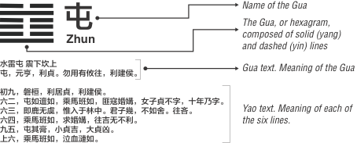

Movements of Change - Visualizing I-Ching
I-Ching is one of the most important books in Chinese history published in the late 9th century BC. While originally used as a divination system, I-Ching is also considered to have a direct inspiration to much of Chinese culture and philosophy including the famous Confucius and the Taoism founder Lao-Tzu.
One unique attribute about I-Ching is that it uses graphic representations- the Hexagrams- to conceal the meaning of its oracular language. It is built around sixty-four hexagrams with a group of six lines for each. Each hexagram has a statement, and each of the six lines also contains comments that correspond to the six stages of a particular situation. The statements and comments provide a vast set of possible interpretations for I-Ching.
This project uses text mining and modern interactive data visualization techniques to reveal new patterning insights of I-Ching from both divinatory and philosophical perspectives. We consider the pattern of hexagrams and their relationships as a binary coding system. The lines in I-Ching describe life as cyclical movement, and each line represents one of the fundamental assertions of the Changes.
A hexagram in the original I-Ching is a formation of six straight or split lines representing the stages and combinations of Yin and Yang- the world of opposites. They are arranged in numerical order from one to sixty-four. Adding an additional dimension (from lines to forms) and another color channel to the graphic symbols can better reveal the sequence structures and the reverse orders (binary) and inverse orders (symmetry) of the patterns of the neighboring hexagrams.

The Gua text, sometimes is called the "Decision", is analyzed by filtering out the divination-related keywords. The words relate to forutne telling are listed in three categories: positive, neutral, and negative. The contents of the Dicision is also classified into different themes: behavior (actions should be taken), mindset (psychological attitudes or faith related suggestions), journey (the cycle of change or movements, it can be either physical or metaphorical), orientation (when navigation system such as north, east, west, and south is mentioned), career (often relates to seeing a superior), politics, family, and military.